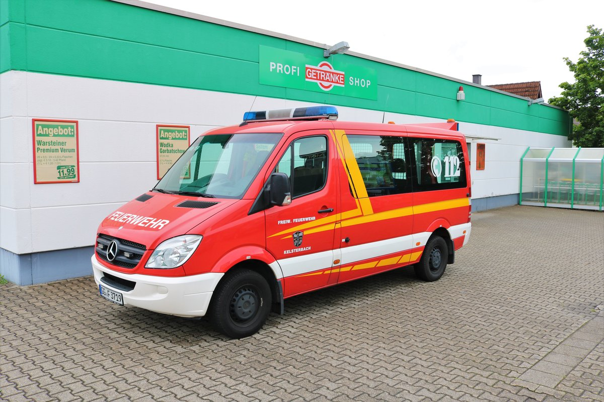

Über uns
| Fahrzeuge | Informationen |
|---|---|
 |
Fahrgestell: Mercedes-Benz Atego Fahrgestell 1326 F Motor: 6 Zylinder mit 256 PS Getriebe: Automatik Gewicht: 12 Tonnen Besatzung: 9 Mann Löschmittel: Wassertank 1600 Liter Fassungsvermögen Pumpe: FPN 10-2000 Feuerlöschkreiselpumpe Sondersignalanlage: 2x Hänsch RKL Nova Doppelblitzleuchten , integrierte Power LED Blitzleuchten an Fahrzeugheckonsole (Magirus/Hänsch), LED Sputnik Nano Frontblitzer, Martinhorn Druckluft Aufbau/Beladung: Umfangreiche feuerwehrtechnische Beladung nach DIN, pneumatisch ausfahrbarer Lichtmast hinter der Fahrerkabine (schwenk/drehbar) mit Fernsteuerung und Xenon Licht von Teklite, Rückfahrkamera in Farbdisplay der HMI Bedieneinheit in Fahrerkabine integriert, durchgehende LED Umfeldbeleuchtung (im Rückwärtsgang als Manövrierhilfe), Wassersauger, Stromaggregat |
|  | Das MTW ist ein Fahrzeug, welches in erster Linie zur Personenbeförderung eingesetzt wird, auch um Material zu transportieren bzw. unseren Anhänger zu ziehen.Zur Verkehssicherung eignet sich dieses Fahrzeug ebenfalls.Der Mercedes Sprinter wurde in Eigenregie zu einem Feuerwehrfahrzeug umgebaut und hat 9 Sitzplätze.Die Beladung beschränkt sich auf diverse Absperrutensilien und einen Erste Hilfe Koffer. |
Da wir nur eine sehr kleine Feuerwehr sind, in einem Dorf mit gerade einmal 1000 Einwohnern brauchen wir nicht mehr als diese 2 Fahrzeuge. Wenn es doch einmal zu einem größeren Einsatz kommt, kommen uns die Feuerwehren aus der Umgebung unterstützen, meist sind das die Feuerwehren aus Bischweier oder Gaggenau. Hier zur Abteilung Gaggenau